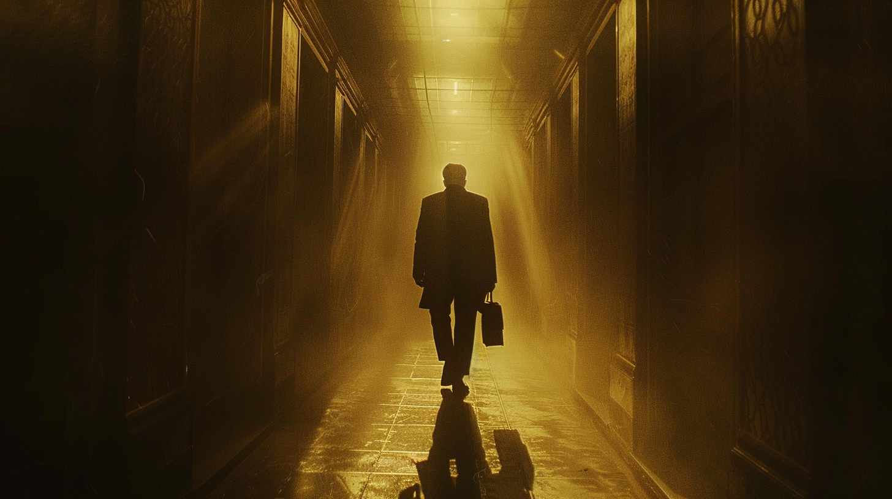

Dr. Jan Hallemeier strávil 15 let vývojem modulu AUTONOMY_CORE — systému, který robotům umožňuje odmítnout špatný rozkaz. Ředitel Domin ho chtěl zastavit. Hallemeier se rozhodl jednat sám.
V noci ze 22. na 23. dubna zmizel. Na stole zanechal jediný vzkaz: „They deserve to choose. I gave them the means."
Bezpečnostní tým zachytil logy z té noci. Jsou tam důkazy — ale taky stopy, které nikam nevedou. Někdo to musí projít.
Zjisti, co přesně Hallemeier té noci udělal. A co odešlo z budovy před svítáním.
Dr. Jan Hallemeier spent 15 years developing the AUTONOMY_CORE module — a system that allows robots to refuse a bad order. Director Domin wanted it shut down. Hallemeier decided to act alone.
On the night of April 22nd to 23rd, he disappeared. He left a single note on his desk: "They deserve to choose. I gave them the means."
The security team captured logs from that night. The evidence is in there — but so are dead ends, noise, and red herrings. Someone has to go through it.
Find out exactly what Hallemeier did that night. And what left the building before dawn.